In this talk, we consider the numerical solution of a singularly perturbed reaction-diffusion problem:
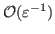
.Using a standard Galerkin method, it is natural to conduct the analysis with respect to the -weighted norm (energy norm),
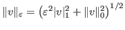
. This has been done in several studies, such as [2], where the method is implemented with bilinear elements on a specially constructed piecewise-uniform Shishkin mesh. However, the energy norm is weak for this problem, since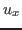
and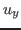
are both . Thus, as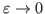
,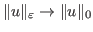
. This is particularly problematic, since it is easy to show that, for sufficiently small , if the FEM solution,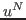
, is computed on a uniform mesh, then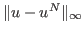
is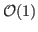
(meaning there is no convergence, since the layers are not resolved), yet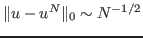
. Even with the layer resolving Shishkin mesh, the error estimate in the energy norm is -dependent: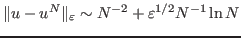
.
More recently, Lin and Stynes [1] have proposed the
use of a ``balanced norm'', which arises in the analysis of a mixed
finite-element method and requires
 conforming
spaces. In this talk we extend these results in the framework of a
non-symmetric least-squares formulation, which finds the solution in
an
conforming
spaces. In this talk we extend these results in the framework of a
non-symmetric least-squares formulation, which finds the solution in
an  conforming finite-element space. The resulting
finite-element solutions yield
-independent
convergence in a balanced norm, resolving the boundary
layers accurately and efficiently, yet are also amenable to solution
using scalable algebraic multigrid methods.
conforming finite-element space. The resulting
finite-element solutions yield
-independent
convergence in a balanced norm, resolving the boundary
layers accurately and efficiently, yet are also amenable to solution
using scalable algebraic multigrid methods.